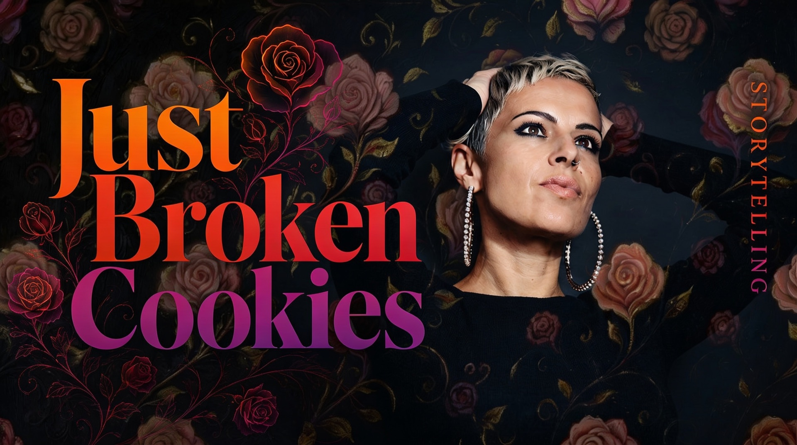

Before we design anything, we take our time.
This is the building phase. We take what we understood and start shaping it into something real. We design, test, adjust. We keep what works, we remove what doesn't.
This is when the story goes live. It's not just about putting it online or showing it. It's about how people experience it.
What is the subject? What is the place ? A person, a brand, a project, an enevent. What stage is it at? What is working, what is missing, what is unclear.
We ask simple questions, but we go a bit deeper than usual. What do you actually want people to feel? What should change after they see this? Who is it really for?
Then we look at the tools. Does this story need photography, video, a website, or written content? Or a mix of them. The choice comes from the goal, not from trends.
By the end of this step, things are clearer. We know what we are building, why we are building it, and how we might tell it.
"They didn't just tell our story — they found a story we didn't even know we had. JustBrokenCookies made us fall in love with our own brand again."Creative Director, Placeholder Brand